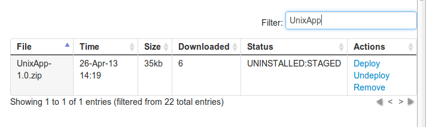
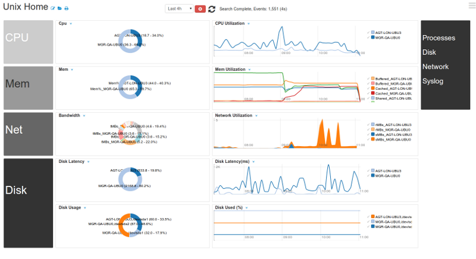
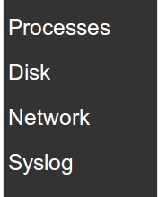

Overview
Installation Guide
Common Deployment Scenarios
Contact
Monitor the health of your Infrastructure using Apps
Download an App from the Apps page. Logscape Apps
Go to Configure and find the Deployment section.
Click on the Upload button and select the files that you would like to upload. e.g UnixApp-1.0.zip
Once the file has been downloaded it will appear in the table below. p 
Find the App then click 'DEPLOY'. The status will change fro UNINSTALLED to DEPLOYED.
Each App has a Home Workspace. e.g The UnixApp has the Unix Home workspace.

All the related searches are usually linked to the App home page
